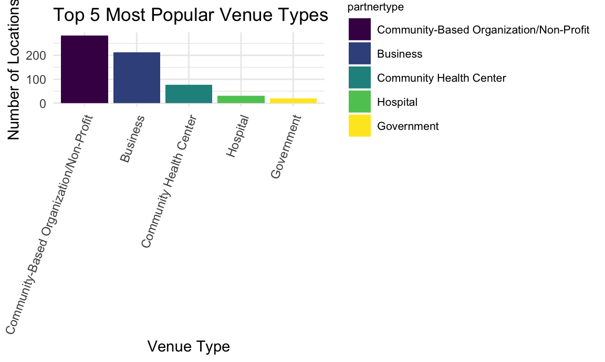

library(tidyverse)
library(rvest)
library(httr)
library(plotly)
knitr::opts_chunk$set(
fig.width = 6,
fig.asp = 0.6,
out.width = "90%"
)
theme_set(theme_minimal())
options(
ggplot2.continuous.colour = "viridis",
ggplot2.continuous.fill = "viridis"
)
scale_colour_discrete = scale_colour_viridis_d
scale_fill_discrete = scale_fill_viridis_dcondom_data =
GET("https://data.cityofnewyork.us/resource/4kpn-sezh.csv") %>%
content("parsed")## Rows: 658 Columns: 35## ── Column specification ────────────────────────────────────────────────────────
## Delimiter: ","
## chr (18): facilityname, service_category, service_type, partnertype, partner...
## dbl (11): facility_pk, zipcode, latitude, longitude, startdate, enddate, com...
## lgl (6): buildingnumber, address_2, condoms_male, fc2_female_insertive_cond...##
## ℹ Use `spec()` to retrieve the full column specification for this data.
## ℹ Specify the column types or set `show_col_types = FALSE` to quiet this message.cleaned_data =
condom_data %>%
select(facility_pk, facilityname, partnertype, partner_type_detailed, address, borough, zipcode, latitude, longitude, phone, condoms_male, fc2_female_insertive_condoms, lubricant) %>%
rename(condoms_female = fc2_female_insertive_condoms) %>%
rename(partner_subtype = partner_type_detailed) %>%
mutate(
condoms_male = as.factor(condoms_male),
condoms_male = fct_recode(condoms_male, "0" = "FALSE", "1" = "TRUE"),
condoms_female = as.factor(condoms_female),
condoms_female = fct_recode(condoms_female, "0" = "FALSE", "1" = "TRUE"),
lubricant = as.factor(lubricant),
lubricant = fct_recode(lubricant, "0" = "FALSE", "1" = "TRUE"),
borough = as.factor(borough)
)
cleaned_data$partnertype[cleaned_data$partnertype == "Community Based Organization/Non-Profit"] =
"Community-Based Organization/Non-Profit"Question: What is the most popular venue type/subtype to distribute condoms?
Venue:
pop_venue =
cleaned_data %>%
group_by(partnertype) %>%
summarize(total_n = n()) %>%
arrange(desc(total_n))
pop_venue %>%
knitr::kable()| partnertype | total_n |
|---|---|
| Community-Based Organization/Non-Profit | 281 |
| Business | 212 |
| Community Health Center | 76 |
| Hospital | 32 |
| Government | 19 |
| Private Practice | 18 |
| Pharmacy | 12 |
| Education | 3 |
| Faith-Based Organization | 3 |
| Sexual Health Clinics (NYC DOHMH) | 2 |
Top 5 types
pop_venue %>%
head(5) %>%
mutate(partnertype = fct_reorder(partnertype, total_n, .desc = TRUE)) %>%
ggplot(aes(x = partnertype, y = total_n)) +
geom_bar(stat = "identity") +
theme(axis.text.x = element_text(angle = 60, hjust = 1)) +
labs(title = "Most Popular Venue Types")
Venue subtype:
Top 10 subtypes
pop_subtype =
cleaned_data %>%
group_by(partner_subtype) %>%
summarize(total_n = n()) %>%
arrange(desc(total_n)) %>%
head(10)
pop_subtype %>%
knitr::kable()| partner_subtype | total_n |
|---|---|
| Other | 317 |
| Bar/Lounge | 105 |
| Clinical Facility | 37 |
| Barbershop | 36 |
| Community Center | 27 |
| Social Service | 18 |
| Physician | 17 |
| Beauty Salon | 12 |
| Night Club | 10 |
| Retail Store | 7 |
pop_subtype %>%
mutate(partner_subtype = fct_reorder(partner_subtype, total_n, .desc = TRUE)) %>%
ggplot(aes(x = partner_subtype, y = total_n)) +
geom_bar(stat = "identity") +
theme(axis.text.x = element_text(angle = 70, hjust = 1)) +
labs(title = "Most Popular Venue Subtypes")Most popular venue subtype within each venue type
pop_subtype_per_venue =
cleaned_data %>%
group_by(partnertype, partner_subtype) %>%
summarize(total_n = n()) %>%
top_n(3) %>%
ungroup() %>%
arrange(partnertype, desc(total_n)) %>%
filter(total_n > 1)## `summarise()` has grouped output by 'partnertype'. You can override using the `.groups` argument.## Selecting by total_npop_subtype_per_venue %>%
knitr::kable()| partnertype | partner_subtype | total_n |
|---|---|---|
| Business | Bar/Lounge | 105 |
| Business | Barbershop | 36 |
| Business | Beauty Salon | 11 |
| Community Health Center | Other | 48 |
| Community Health Center | Clinical Facility | 26 |
| Community Health Center | Women’s Center | 2 |
| Community-Based Organization/Non-Profit | Other | 234 |
| Community-Based Organization/Non-Profit | Social Service | 18 |
| Community-Based Organization/Non-Profit | Community Center | 15 |
| Education | Student Housing | 2 |
| Government | Community Center | 11 |
| Government | Government Agency | 6 |
| Hospital | Other | 20 |
| Hospital | Clinical Facility | 9 |
| Hospital | None | 3 |
| Pharmacy | Other | 11 |
| Private Practice | Physician | 16 |
| Sexual Health Clinics (NYC DOHMH) | Clinical Facility | 2 |
pop_subtype_per_venue %>%
mutate(partner_subtype = fct_reorder(partner_subtype, total_n, .desc = TRUE)) %>%
ggplot(aes(x = partnertype, y = total_n, fill = partner_subtype)) +
geom_bar(stat = "identity", position = position_dodge()) +
theme(axis.text.x = element_text(angle = 70, hjust = 1)) pop_subtype_per_venue %>%
mutate(partner_subtype = fct_reorder(partner_subtype, total_n, .desc = TRUE)) %>%
plot_ly(x = ~partnertype, y = ~total_n)## No trace type specified:
## Based on info supplied, a 'bar' trace seems appropriate.
## Read more about this trace type -> https://plotly.com/r/reference/#bar